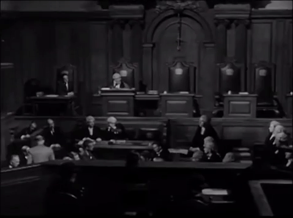
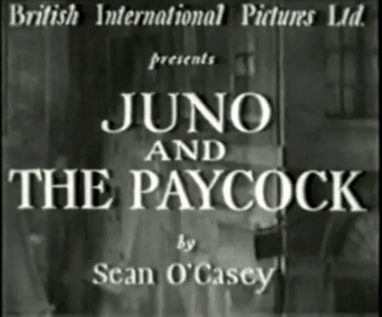

TOP 50
BEST FILMS
Directed By
ALFRED HITCHCOCK

1. The 39 Steps, 1935
While on vacation in London, Canadian Richard Hannay becomes embroiled in an international spy ring. Then he meets agent Annabella Smith, who is soon killed in his apartment. He must elude the police, who are hunting him for murder, while he tries to stop Professor Jordan from sending secrets out of the country. Hannay is assisted by Pamela, an unwilling accomplice who discovers the truth.
While on vacation in London, Canadian Richard Hannay becomes embroiled in an international spy ring. Then he meets agent Annabella Smith, who is soon killed in his apartment. He must elude the police, who are hunting him for murder, while he tries to stop Professor Jordan from sending secrets out of the country. Hannay is assisted by Pamela, an unwilling accomplice who discovers the truth.

2. Dial M For Murder, 1954
Ex-tennis pro Tony Wendice wants to have his wealthy wife murdered so he can get his hands on her inheritance. When he discovers her affair with Mark Halliday, he comes up with the perfect plan to kill her. He blackmails an old acquaintance into carrying out the murder, but the carefully-orchestrated set-up goes awry, and Margot stays alive. Now Wendice must frantically scheme to outwit the police and avoid having his plot detected.
Ex-tennis pro Tony Wendice wants to have his wealthy wife murdered so he can get his hands on her inheritance. When he discovers her affair with Mark Halliday, he comes up with the perfect plan to kill her. He blackmails an old acquaintance into carrying out the murder, but the carefully-orchestrated set-up goes awry, and Margot stays alive. Now Wendice must frantically scheme to outwit the police and avoid having his plot detected.

3. Sabotage, 1936
A ring of saboteurs is causing havoc in London with a series of explosive terrorist attacks. Karl Verloc is part of the group, but he maintains a cover as a kind movie theater owner. His wife (Sylvia Sidney) is beginning to suspect something, and so is Scotland Yard Detective Sgt. Ted Spencer. What neither of them know, however, is that Verloc uses his wife's little brother to deliver the bombs in film canisters.
A ring of saboteurs is causing havoc in London with a series of explosive terrorist attacks. Karl Verloc is part of the group, but he maintains a cover as a kind movie theater owner. His wife (Sylvia Sidney) is beginning to suspect something, and so is Scotland Yard Detective Sgt. Ted Spencer. What neither of them know, however, is that Verloc uses his wife's little brother to deliver the bombs in film canisters.

4. North By Northwest, 1959
This classic suspense film finds New York City ad executive Roger O. Thornhill pursued by ruthless spy Phillip Vandamm after Thornhill is mistaken for a government agent. Hunted relentlessly by Vandamm's associates, the harried Thornhill ends up on a cross-country journey, meeting the beautiful and mysterious Eve Kendall along the way. Soon Vandamm's henchmen close in on Thornhill, resulting in a number of iconic action sequences.
This classic suspense film finds New York City ad executive Roger O. Thornhill pursued by ruthless spy Phillip Vandamm after Thornhill is mistaken for a government agent. Hunted relentlessly by Vandamm's associates, the harried Thornhill ends up on a cross-country journey, meeting the beautiful and mysterious Eve Kendall along the way. Soon Vandamm's henchmen close in on Thornhill, resulting in a number of iconic action sequences.

5. The Birds, 1963
Melanie Daniels meets Mitch Brenner in a San Francisco pet store and decides to follow him home. She brings with her the gift of two love birds and they strike up a romance. One day birds start attacking children at Mitch's sisters party. A huge assault starts on the town by attacking birds.
Melanie Daniels meets Mitch Brenner in a San Francisco pet store and decides to follow him home. She brings with her the gift of two love birds and they strike up a romance. One day birds start attacking children at Mitch's sisters party. A huge assault starts on the town by attacking birds.

6. Young and Innocent, 1937
When normal guy Robert Tisdall discovers the body of actress Christine Clay washed up on shore, he is arrested for her murder. Having no confidence in the barrister assigned to him, Tisdall escapes from the police station and ends up hitching a ride with the police chief's daughter, Erica Burgoyne. After being spotted together, the two are assumed to be in league and have no choice but to cooperate in order to uncover the real killer.
When normal guy Robert Tisdall discovers the body of actress Christine Clay washed up on shore, he is arrested for her murder. Having no confidence in the barrister assigned to him, Tisdall escapes from the police station and ends up hitching a ride with the police chief's daughter, Erica Burgoyne. After being spotted together, the two are assumed to be in league and have no choice but to cooperate in order to uncover the real killer.

7. Murder!, 1930
Actress Edna Druce is found dead, and fellow thespian Diana Baring can't explanation why she's holding the murder weapon. Diana seems destined for conviction and the death penalty, but juror Sir John Menier thinks she's innocent. An actor himself, Sir John collects clues and revisits the crime scene in an attempt to clear Diana, but his noble efforts might finger another performer with ties to Edna and Diana's touring company.
Actress Edna Druce is found dead, and fellow thespian Diana Baring can't explanation why she's holding the murder weapon. Diana seems destined for conviction and the death penalty, but juror Sir John Menier thinks she's innocent. An actor himself, Sir John collects clues and revisits the crime scene in an attempt to clear Diana, but his noble efforts might finger another performer with ties to Edna and Diana's touring company.

8. Rear Window, 1954
A newspaper photographer with a broken leg passes time recuperating by observing his neighbors through his window. He sees what he believes to be a murder, and decides to solve the crime himself. With the help of his nurse and girlfriend, he tries to catch the murderer without being killed himself.
A newspaper photographer with a broken leg passes time recuperating by observing his neighbors through his window. He sees what he believes to be a murder, and decides to solve the crime himself. With the help of his nurse and girlfriend, he tries to catch the murderer without being killed himself.

9. Shadow of a Doubt, 1943
Uncle Charlie visits his relatives in Santa Rosa. He is a very charming man, but his niece slowly realizes that he is wanted for murder and he soon recognizes her suspicions. Although one of the suspected murderers is killed and the case is considered closed, she still has her suspicions.
Uncle Charlie visits his relatives in Santa Rosa. He is a very charming man, but his niece slowly realizes that he is wanted for murder and he soon recognizes her suspicions. Although one of the suspected murderers is killed and the case is considered closed, she still has her suspicions.

10. Vertigo, 1958
An ex-police officer who suffers from an intense fear of heights is hired to prevent an old friend's wife from committing suicide, but all is not as it seems. Hitchcock's haunting, compelling masterpiece is uniquely revelatory about the director's own predilections and hang-ups and is widely considered to be one of his masterworks.
An ex-police officer who suffers from an intense fear of heights is hired to prevent an old friend's wife from committing suicide, but all is not as it seems. Hitchcock's haunting, compelling masterpiece is uniquely revelatory about the director's own predilections and hang-ups and is widely considered to be one of his masterworks.

11. Psycho, 1960
Phoenix secretary Marion Crane, on the lam after stealing $40,000 from her employer in order to run away with her boyfriend, Sam Loomis, is overcome by exhaustion during a heavy rainstorm. Traveling on the back roads to avoid the police, she stops for the night at the ramshackle Bates Motel and meets the polite but highly strung proprietor Norman Bates, a young man with an interest in taxidermy and a difficult relationship with his mother.
Phoenix secretary Marion Crane, on the lam after stealing $40,000 from her employer in order to run away with her boyfriend, Sam Loomis, is overcome by exhaustion during a heavy rainstorm. Traveling on the back roads to avoid the police, she stops for the night at the ramshackle Bates Motel and meets the polite but highly strung proprietor Norman Bates, a young man with an interest in taxidermy and a difficult relationship with his mother.
12. Rebecca, 1940
Story of a young woman who marries a fascinating widower only to find out that she must live in the shadow of his former wife, Rebecca, who died mysteriously several years earlier. The young wife must come to grips with the terrible secret of her handsome, cold husband, Max De Winter. She must also deal with the jealous, obsessed the housekeeper, who will not accept her as the mistress of the house.
Story of a young woman who marries a fascinating widower only to find out that she must live in the shadow of his former wife, Rebecca, who died mysteriously several years earlier. The young wife must come to grips with the terrible secret of her handsome, cold husband, Max De Winter. She must also deal with the jealous, obsessed the housekeeper, who will not accept her as the mistress of the house.

13. To Catch A Thief, 1955
Notorious cat burglar John Robie has long since retired to tend vineyards on the French Riviera. When a series of robberies is committed in his style, John must clear his name. Armed with a list of people who own the most expensive jewels currently in the area, John begins following the first owner, young Francie. When her jewels are stolen, Francie suspects John, destroying their tentative romance. John goes on the lam to catch the thief and clear his own name.
Notorious cat burglar John Robie has long since retired to tend vineyards on the French Riviera. When a series of robberies is committed in his style, John must clear his name. Armed with a list of people who own the most expensive jewels currently in the area, John begins following the first owner, young Francie. When her jewels are stolen, Francie suspects John, destroying their tentative romance. John goes on the lam to catch the thief and clear his own name.

14. Rope, 1948
Just before hosting a dinner party, Philip Morgan and Brandon Shaw strangle a mutual friend to death with a piece of rope, purely as a Nietzsche-inspired philosophical exercise. Hiding the body in a chest upon which they then arrange a buffet dinner, the pair welcome their guests, including the victim's oblivious fiancée and the college professor whose lectures inadvertently inspired the killing.
Just before hosting a dinner party, Philip Morgan and Brandon Shaw strangle a mutual friend to death with a piece of rope, purely as a Nietzsche-inspired philosophical exercise. Hiding the body in a chest upon which they then arrange a buffet dinner, the pair welcome their guests, including the victim's oblivious fiancée and the college professor whose lectures inadvertently inspired the killing.

15. The Man Who Knew Too Much, 1956
Dr. Ben McKenna is on vacation with his wife and son in Morocco when a chance encounter with a stranger sets their trip, and their lives, on a drastically different course. The stranger, killed in front of the family in the marketplace, reveals an assassination plot to the Americans. The couple's son is abducted in order to ensure the plot is kept secret, and suddenly the mother and father, with no help from the police, must figure out a way to get their child back.
Dr. Ben McKenna is on vacation with his wife and son in Morocco when a chance encounter with a stranger sets their trip, and their lives, on a drastically different course. The stranger, killed in front of the family in the marketplace, reveals an assassination plot to the Americans. The couple's son is abducted in order to ensure the plot is kept secret, and suddenly the mother and father, with no help from the police, must figure out a way to get their child back.

16. Marnie, 1964
Mark Rutland is a customer of one Mr. Strutt, whose business was robbed by his secretary, the mysterious Marnie Edgar. When Marnie applies for a job with Mark, with the intention of stealing from him, Mark -- who is obsessively in love with her -- blackmails her into marrying him. However, he soon discovers that she has severe psychological issues regarding men, thunderstorms and the color red, and resolves to help her come to terms with her past trauma.
Mark Rutland is a customer of one Mr. Strutt, whose business was robbed by his secretary, the mysterious Marnie Edgar. When Marnie applies for a job with Mark, with the intention of stealing from him, Mark -- who is obsessively in love with her -- blackmails her into marrying him. However, he soon discovers that she has severe psychological issues regarding men, thunderstorms and the color red, and resolves to help her come to terms with her past trauma.

17. Frenzy, 1972
London is held in the grip of a serial killer whose modus operandi is to murder his victims by strangling them with a necktie. When short-tempered ex-Royal Air Force officer Richard Blaney discovers his ex-wife murdered, Blaney becomes a suspect. Forced to go on the run, Blaney attempts to take refuge with his best friend, fruit merchant Bob Rusk, however Rusk may, in fact, be the necktie murderer himself.
London is held in the grip of a serial killer whose modus operandi is to murder his victims by strangling them with a necktie. When short-tempered ex-Royal Air Force officer Richard Blaney discovers his ex-wife murdered, Blaney becomes a suspect. Forced to go on the run, Blaney attempts to take refuge with his best friend, fruit merchant Bob Rusk, however Rusk may, in fact, be the necktie murderer himself.
18. Lifeboat, 1944
American and British civilians who have survived the sinking of their ship by a German submarine struggle to reach land in a crowded lifeboat. When a German officer (Walter Slezak) is rescued from the water, the group allows him to board, but his presence only increases the tensions on the boat. Soon treachery ensues, and the population of the vessel gradually decreases as conflicts come to a head.
American and British civilians who have survived the sinking of their ship by a German submarine struggle to reach land in a crowded lifeboat. When a German officer (Walter Slezak) is rescued from the water, the group allows him to board, but his presence only increases the tensions on the boat. Soon treachery ensues, and the population of the vessel gradually decreases as conflicts come to a head.

19. Saboteur, 1942
Factory worker Barry Kane is wrongfully accused of setting a deadly fire at an airplane plant in an apparent act of sabotage. Kane believes that the fire was set by another worker, and he travels across the country to find the mysterious saboteur. Along the way he is forced to take Patricia Martin hostage, but as he begins to earn her trust, she turns from an unwilling captive to a willing accomplice in his quest to help clear his name.
Factory worker Barry Kane is wrongfully accused of setting a deadly fire at an airplane plant in an apparent act of sabotage. Kane believes that the fire was set by another worker, and he travels across the country to find the mysterious saboteur. Along the way he is forced to take Patricia Martin hostage, but as he begins to earn her trust, she turns from an unwilling captive to a willing accomplice in his quest to help clear his name.

20. The Trouble With Harry, 1955
When a local man's corpse appears on a nearby hillside, no one is quite sure what happened to him. Many of the town's residents secretly wonder if they are responsible, including the man's ex-wife, Jennifer, and Capt. Albert Wiles, a retired seaman who was hunting in the woods where the body was found. As the no-nonsense sheriff gets involved and local artist Sam Marlowe (John Forsythe) offers his help, the community slowly unravels the mystery.
When a local man's corpse appears on a nearby hillside, no one is quite sure what happened to him. Many of the town's residents secretly wonder if they are responsible, including the man's ex-wife, Jennifer, and Capt. Albert Wiles, a retired seaman who was hunting in the woods where the body was found. As the no-nonsense sheriff gets involved and local artist Sam Marlowe (John Forsythe) offers his help, the community slowly unravels the mystery.

21. The Wrong Man, 1956
Musician Manny Balestrero needs money to pay for his wife Rose's dental procedure. When he tries to borrow money from their insurance policy, someone at the office mistakes him for a man who had robbed them twice at gunpoint. After Manny is arrested, his defense attorney, Frank O'Connor, works to demonstrate that Manny has an alibi for the crimes. The stress of the case, however, threatens to destroy Manny's family before his name can be cleared.
Musician Manny Balestrero needs money to pay for his wife Rose's dental procedure. When he tries to borrow money from their insurance policy, someone at the office mistakes him for a man who had robbed them twice at gunpoint. After Manny is arrested, his defense attorney, Frank O'Connor, works to demonstrate that Manny has an alibi for the crimes. The stress of the case, however, threatens to destroy Manny's family before his name can be cleared.

22. Topaz, 1969
When a Soviet official defects to the United States, he brings with him claims that Russia is using Cuba as a staging ground for nuclear missiles. CIA agent Michael Nordstrom (John Forsythe) enlists the help of French spy André Devereaux to find out if the official's claims are true. Not only do the agents discover that the Soviet's suspicions are valid, but they also find out that a French spy ring known as "Topaz" is working with the Russians to uncover NATO secrets.
When a Soviet official defects to the United States, he brings with him claims that Russia is using Cuba as a staging ground for nuclear missiles. CIA agent Michael Nordstrom (John Forsythe) enlists the help of French spy André Devereaux to find out if the official's claims are true. Not only do the agents discover that the Soviet's suspicions are valid, but they also find out that a French spy ring known as "Topaz" is working with the Russians to uncover NATO secrets.

23. Stage Fright, 1949
The police think actor Jonathan Cooper is a murderer, and now they're on his tail. He asserts that it was his lover, the famous actress Charlotte Inwood, who killed the victim (not coincidentally, her husband). He seeks shelter with his ex-girlfriend Eve, a budding actress. Convinced Jonathan is innocent, Eve plays detective and assumes multiple disguises. But once she is entangled in a web of deception, she fears everyone in fact wears a mask.
The police think actor Jonathan Cooper is a murderer, and now they're on his tail. He asserts that it was his lover, the famous actress Charlotte Inwood, who killed the victim (not coincidentally, her husband). He seeks shelter with his ex-girlfriend Eve, a budding actress. Convinced Jonathan is innocent, Eve plays detective and assumes multiple disguises. But once she is entangled in a web of deception, she fears everyone in fact wears a mask.

24. I Confess, 1953
Father Logan is a Catholic priest, but he finds his faith put to the test when he is accused of the murder of a wealthy member of his parish. The real murderer was Otto (O.E. Hasse), a poor German immigrant desperate for money, and Father Logan knows this because Otto confessed it to him. However, Father Logan is bound by the secrecy of the confessional and cannot share this evidence with the police, even if it means his own life.
Father Logan is a Catholic priest, but he finds his faith put to the test when he is accused of the murder of a wealthy member of his parish. The real murderer was Otto (O.E. Hasse), a poor German immigrant desperate for money, and Father Logan knows this because Otto confessed it to him. However, Father Logan is bound by the secrecy of the confessional and cannot share this evidence with the police, even if it means his own life.

25. Foreign Correspondent, 1940
Crime reporter John Jones is turning in nothing but dull copy. His editor, unhappy with his work, hopes a change of scenery will be the thing Jones needs to get back on track. Re-assigned to Europe as a foreign correspondent, Jones is very much out of his element. When he stumbles on a spy ring, he feels ill-equipped to unravel the truth alone and he seeks help from a beautiful politician's daughter and an urbane English journalist (George Sanders).
Crime reporter John Jones is turning in nothing but dull copy. His editor, unhappy with his work, hopes a change of scenery will be the thing Jones needs to get back on track. Re-assigned to Europe as a foreign correspondent, Jones is very much out of his element. When he stumbles on a spy ring, he feels ill-equipped to unravel the truth alone and he seeks help from a beautiful politician's daughter and an urbane English journalist (George Sanders).

26. Mr. & Mrs. Smith, 1941
When David Smith concedes to his wife, Ann, that he's not quite satisfied with their marriage, the couple's relationship spins into disarray. In the wake of David's confession, Ann learns that because of a legal snafu, they're not actually married. Ann uses her freedom to try the dating market, where she's courted by Jeff Custer, one of David's professional colleagues. David's attempts to win her back lead to several humorous situations.
When David Smith concedes to his wife, Ann, that he's not quite satisfied with their marriage, the couple's relationship spins into disarray. In the wake of David's confession, Ann learns that because of a legal snafu, they're not actually married. Ann uses her freedom to try the dating market, where she's courted by Jeff Custer, one of David's professional colleagues. David's attempts to win her back lead to several humorous situations.
27. Family Plot, 1976
Blanche, a less than reputable psychic, and her equally shady boyfriend, George, are hired by an elderly lady to find her nephew Arthur, who had been given up for adoption as a boy. With little information to go on, the pair track down the now-adult man in San Francisco. Arthur has had a colorful past, including murder and thievery with girlfriend Fran (Karen Black). So when he discovers he is being trailed, he assumes it's for other reasons.
Blanche, a less than reputable psychic, and her equally shady boyfriend, George, are hired by an elderly lady to find her nephew Arthur, who had been given up for adoption as a boy. With little information to go on, the pair track down the now-adult man in San Francisco. Arthur has had a colorful past, including murder and thievery with girlfriend Fran (Karen Black). So when he discovers he is being trailed, he assumes it's for other reasons.
28. The Lodger, 1927
When a landlady and her husband take in a new lodger, they're overjoyed: He's quiet, humble and pays a month's rent in advance. But his mysterious and suspicious behavior soon has them wondering if he's the killer terrorizing local blond girls. Their daughter, a cocky model, is far less concerned, her attraction obvious. Her police-detective boyfriend, in a pique of jealousy, seeks to uncover the lodger's true identity.
When a landlady and her husband take in a new lodger, they're overjoyed: He's quiet, humble and pays a month's rent in advance. But his mysterious and suspicious behavior soon has them wondering if he's the killer terrorizing local blond girls. Their daughter, a cocky model, is far less concerned, her attraction obvious. Her police-detective boyfriend, in a pique of jealousy, seeks to uncover the lodger's true identity.
29. Notorious, 1946
In order to help bring Nazis to justice, U.S. government agent T.R. Devlin recruits Alicia Huberman, the American daughter of a convicted German war criminal, as a spy. As they begin to fall for one another, Alicia is instructed to win the affections of Alexander Sebastian, a Nazi hiding out in Brazil. When Sebastian becomes serious about his relationship with Alicia, the stakes get higher, and Devlin must watch her slip further undercover.
In order to help bring Nazis to justice, U.S. government agent T.R. Devlin recruits Alicia Huberman, the American daughter of a convicted German war criminal, as a spy. As they begin to fall for one another, Alicia is instructed to win the affections of Alexander Sebastian, a Nazi hiding out in Brazil. When Sebastian becomes serious about his relationship with Alicia, the stakes get higher, and Devlin must watch her slip further undercover.

30. Strangers On A Train, 1951
Tennis star Guy Haines is enraged by his trampy wife's refusal to finalize their divorce so he can wed senator's daughter Anne. He strikes up a conversation with a stranger, Bruno Anthony (Robert Walker), and unwittingly sets in motion a deadly chain of events. Psychopathic Bruno kills Guy's wife, then urges Guy to reciprocate by killing Bruno's father. Meanwhile, Guy is murder suspect number one.
Tennis star Guy Haines is enraged by his trampy wife's refusal to finalize their divorce so he can wed senator's daughter Anne. He strikes up a conversation with a stranger, Bruno Anthony (Robert Walker), and unwittingly sets in motion a deadly chain of events. Psychopathic Bruno kills Guy's wife, then urges Guy to reciprocate by killing Bruno's father. Meanwhile, Guy is murder suspect number one.

31. The Lady Vanishes, 1938
On a train headed for England a group of travelers is delayed by an avalanche. Holed up in a hotel in a fictional European country, young Iris befriends elderly Miss Froy. When the train resumes, Iris suffers a bout of unconsciousness and wakes to find the old woman has disappeared. The other passengers ominously deny Miss Froy ever existed, so Iris begins to investigate with another traveler and, as the pair sleuth, romantic sparks fly.
On a train headed for England a group of travelers is delayed by an avalanche. Holed up in a hotel in a fictional European country, young Iris befriends elderly Miss Froy. When the train resumes, Iris suffers a bout of unconsciousness and wakes to find the old woman has disappeared. The other passengers ominously deny Miss Froy ever existed, so Iris begins to investigate with another traveler and, as the pair sleuth, romantic sparks fly.

32. Secret Agent, 1936
British intelligence fakes the death of Edgar Brodie to send him on a mission in Switzerland, where as Richard Ashendon he is to locate and kill a Germany spy. Accompanying Brodie are fellow agents Elsa Carrington, who is to play Brodie's wife, and an eccentric assassin known as The General. Locating the spy on a train, Brodie and Elsa have second thoughts about their mission just as an American ingratiates himself with them.
British intelligence fakes the death of Edgar Brodie to send him on a mission in Switzerland, where as Richard Ashendon he is to locate and kill a Germany spy. Accompanying Brodie are fellow agents Elsa Carrington, who is to play Brodie's wife, and an eccentric assassin known as The General. Locating the spy on a train, Brodie and Elsa have second thoughts about their mission just as an American ingratiates himself with them.
33. Jamaica Inn, 1939
After the death of her mother, young Mary travels to the Cornish coast seeking her Aunt Patience. Stranded on a windswept, isolated road, Mary meets Humphrey Pengallan (Charles Laughton), who kindly escorts her to the Jamaica Inn. There, Mary meets her aunt and bullying uncle, Merlyn Joss -- who secretly leads a band of pirates that pilfers the goods from wrecked ships. Suspicious, Mary turns to Pengallan for help, only to discover another dark secret.
After the death of her mother, young Mary travels to the Cornish coast seeking her Aunt Patience. Stranded on a windswept, isolated road, Mary meets Humphrey Pengallan (Charles Laughton), who kindly escorts her to the Jamaica Inn. There, Mary meets her aunt and bullying uncle, Merlyn Joss -- who secretly leads a band of pirates that pilfers the goods from wrecked ships. Suspicious, Mary turns to Pengallan for help, only to discover another dark secret.

34. The Paradine Case, 1947
Attorney Anthony Keane agrees to represent Londonite Mrs. Paradine, who has been fingered in her husband's murder. From the start, the married lawyer is drawn to the enigmatic beauty, and he begins to cast about for a way to exonerate his client. Keane puts Andre Latour, the Paradine household servant, on the stand, suggesting he is the killer. But Keane soon loses his way in the courtroom, and his half-baked plan sets off a stunning chain of events.
Attorney Anthony Keane agrees to represent Londonite Mrs. Paradine, who has been fingered in her husband's murder. From the start, the married lawyer is drawn to the enigmatic beauty, and he begins to cast about for a way to exonerate his client. Keane puts Andre Latour, the Paradine household servant, on the stand, suggesting he is the killer. But Keane soon loses his way in the courtroom, and his half-baked plan sets off a stunning chain of events.

35. Under Capricorn, 1949
Poison and passion in 18th-century Australia. A young man is shocked to find that his genteel cousin, married to a tough ex-con who has found wealth in the penal colony, has taken to the bottle. His efforts to restore her spirits turn into more tender affections, but the actions of a malevolent housekeeper spark a chain of events that climax with a shocking revelation.
Poison and passion in 18th-century Australia. A young man is shocked to find that his genteel cousin, married to a tough ex-con who has found wealth in the penal colony, has taken to the bottle. His efforts to restore her spirits turn into more tender affections, but the actions of a malevolent housekeeper spark a chain of events that climax with a shocking revelation.
36. Blackmail, 1929
During a date, Alice White has a fight with her boyfriend, Scotland Yard Officer Frank Webber, and decides to leave with an artist named Mr. Crewe. Whey they get to the artist's flat, Mr. Crewe attempts to force himself on Alice, and she kills him to defend herself. Frank investigates the case and, after realizing Alice is the culprit, seeks to help her. However, a thief with blackmail on his mind complicates matters.
During a date, Alice White has a fight with her boyfriend, Scotland Yard Officer Frank Webber, and decides to leave with an artist named Mr. Crewe. Whey they get to the artist's flat, Mr. Crewe attempts to force himself on Alice, and she kills him to defend herself. Frank investigates the case and, after realizing Alice is the culprit, seeks to help her. However, a thief with blackmail on his mind complicates matters.

37. The Manxman, 1929
A woman faces a crisis of conscience when her father insists that she marry a lawyer instead of her true love.
A woman faces a crisis of conscience when her father insists that she marry a lawyer instead of her true love.

38. Rich and Strange, 1931
Accountant Fred Hill and his wife, Emily, lead lives of tedious regimentation -- until a kindly uncle gives them a small fortune. Fred quits his job and they race off to Paris before embarking on a world cruise. Aboard ship and caught up in a luxurious new lifestyle, the Hills begin affairs -- he with a mysterious princess and she with the suave Cmdr. Gordon -- that may drain their wallets and tear their marriage apart.
Accountant Fred Hill and his wife, Emily, lead lives of tedious regimentation -- until a kindly uncle gives them a small fortune. Fred quits his job and they race off to Paris before embarking on a world cruise. Aboard ship and caught up in a luxurious new lifestyle, the Hills begin affairs -- he with a mysterious princess and she with the suave Cmdr. Gordon -- that may drain their wallets and tear their marriage apart.
39. The Pleasure Garden, 1925
While one chorus girl is unfaithful to her fiance, another marries a man who eventually betrays her.
While one chorus girl is unfaithful to her fiance, another marries a man who eventually betrays her.

40. Waltzes from Vienna, 1934
Johann Strauss is inspired to compose a waltz after watching bakers toss rolls and mix batter.
Johann Strauss is inspired to compose a waltz after watching bakers toss rolls and mix batter.

41. Easy Virtue, 1927
After divorcing her abusive husband, a woman has an affair with a painter, then marries a sweet young man who knows nothing of her past.
After divorcing her abusive husband, a woman has an affair with a painter, then marries a sweet young man who knows nothing of her past.

42. Downhill, 1927
The life of a privileged boy sinks into mishap and bad luck after he takes the rap for a theft and is expelled from school.
The life of a privileged boy sinks into mishap and bad luck after he takes the rap for a theft and is expelled from school.
43. Spellbound, 1945
When Dr. Anthony Edwardes arrives at a Vermont mental hospital to replace the outgoing hospital director, Dr. Constance Peterson, a psychoanalyst, discovers Edwardes is actually an impostor. The man confesses that the real Dr. Edwardes is dead and fears he may have killed him, but cannot recall anything. Dr. Peterson, however is convinced his impostor is innocent of the man's murder, and joins him on a quest to unravel his amnesia through psychoanalysis.
When Dr. Anthony Edwardes arrives at a Vermont mental hospital to replace the outgoing hospital director, Dr. Constance Peterson, a psychoanalyst, discovers Edwardes is actually an impostor. The man confesses that the real Dr. Edwardes is dead and fears he may have killed him, but cannot recall anything. Dr. Peterson, however is convinced his impostor is innocent of the man's murder, and joins him on a quest to unravel his amnesia through psychoanalysis.

44. The Sorcerer's Apprentice, 1961
"The Sorcerer's Apprentice" is a seventh-season episode of Alfred Hitchcock Presents made in the summer of 1961 that has never been broadcast on network television
"The Sorcerer's Apprentice" is a seventh-season episode of Alfred Hitchcock Presents made in the summer of 1961 that has never been broadcast on network television

45. Juno & The Paycock, 1930
A working-class Irish family experiences tragedy as they await a large inheritance. Based on Sean O'Casey's play.
A working-class Irish family experiences tragedy as they await a large inheritance. Based on Sean O'Casey's play.
46. Torn Curtain, 1966
American physicist Michael Armstrong shocks his friends and family by defecting to East Germany to work with the Soviets during the height of the Cold War. Even his fiancée is surprised by the move, but when she follows him behind the Iron Curtain, she discovers that her husband-to-be isn't a spy, but a double agent working to discover Soviet nuclear secrets. As they plot a way to escape back to America, his cover is blown, putting both of their lives in jeopardy.
American physicist Michael Armstrong shocks his friends and family by defecting to East Germany to work with the Soviets during the height of the Cold War. Even his fiancée is surprised by the move, but when she follows him behind the Iron Curtain, she discovers that her husband-to-be isn't a spy, but a double agent working to discover Soviet nuclear secrets. As they plot a way to escape back to America, his cover is blown, putting both of their lives in jeopardy.

47. Le Faux Coupable, 1956
Musician Manny Balestrero needs money to pay for his wife Rose's dental procedure. When he tries to borrow money from their insurance policy, someone at the office mistakes him for a man who had robbed them twice at gunpoint. After Manny is arrested, his defense attorney, Frank O'Connor, works to demonstrate that Manny has an alibi for the crimes. The stress of the case, however, threatens to destroy Manny's family before his name can be cleared.
Musician Manny Balestrero needs money to pay for his wife Rose's dental procedure. When he tries to borrow money from their insurance policy, someone at the office mistakes him for a man who had robbed them twice at gunpoint. After Manny is arrested, his defense attorney, Frank O'Connor, works to demonstrate that Manny has an alibi for the crimes. The stress of the case, however, threatens to destroy Manny's family before his name can be cleared.

48. Number Seventeen, 1932
In an empty London house, a hobo named Ben looks for shelter yet instead finds a corpse. When Detective Fordyce shows up, he questions Ben, but is interrupted when a girl falls through the roof. Her father has vanished, and she's received an inscrutable telegram that mentions both the house and a missing necklace. Soon more suspicious characters turn up, all looking for the necklace, and none of them who they claim to be.
In an empty London house, a hobo named Ben looks for shelter yet instead finds a corpse. When Detective Fordyce shows up, he questions Ben, but is interrupted when a girl falls through the roof. Her father has vanished, and she's received an inscrutable telegram that mentions both the house and a missing necklace. Soon more suspicious characters turn up, all looking for the necklace, and none of them who they claim to be.

49. The Fighting Generation, 1944
The Fighting Generation is a 1944 propaganda short film or public service announcement produced for the U.S. Treasury Department and intended to boost war bond sales, directed by an uncredited Alfred Hitchcock and starring Jennifer Jones as a nurse's aide. The film was shot in a single day, on October 9, 1944.
The Fighting Generation is a 1944 propaganda short film or public service announcement produced for the U.S. Treasury Department and intended to boost war bond sales, directed by an uncredited Alfred Hitchcock and starring Jennifer Jones as a nurse's aide. The film was shot in a single day, on October 9, 1944.
50. Bon Voyage, 1944
When a WWII RAF fighter crashes his plane in German territory, he faces a battle to escape the enemy.
When a WWII RAF fighter crashes his plane in German territory, he faces a battle to escape the enemy.